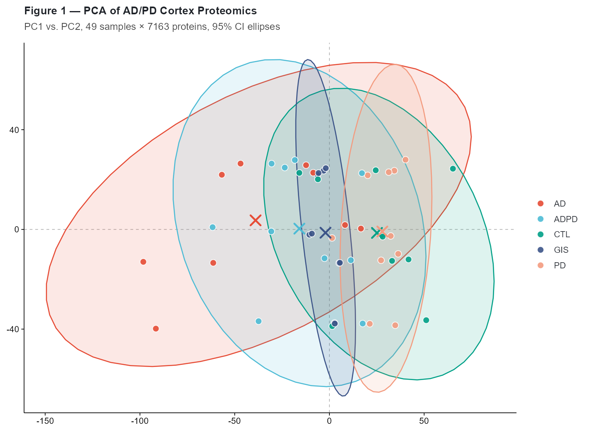
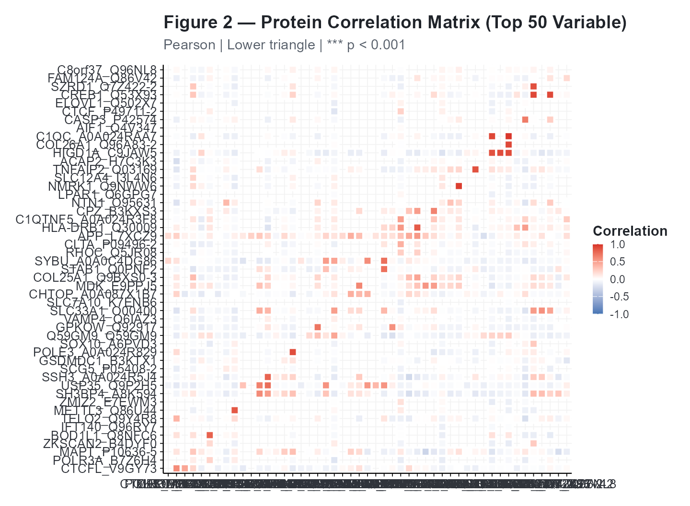
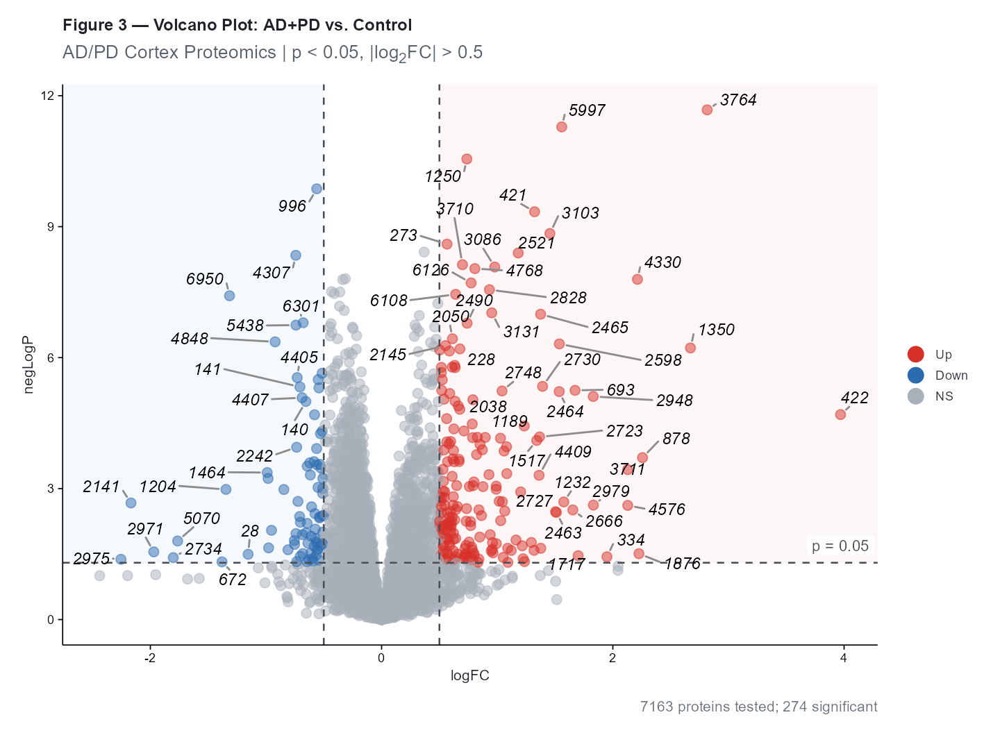
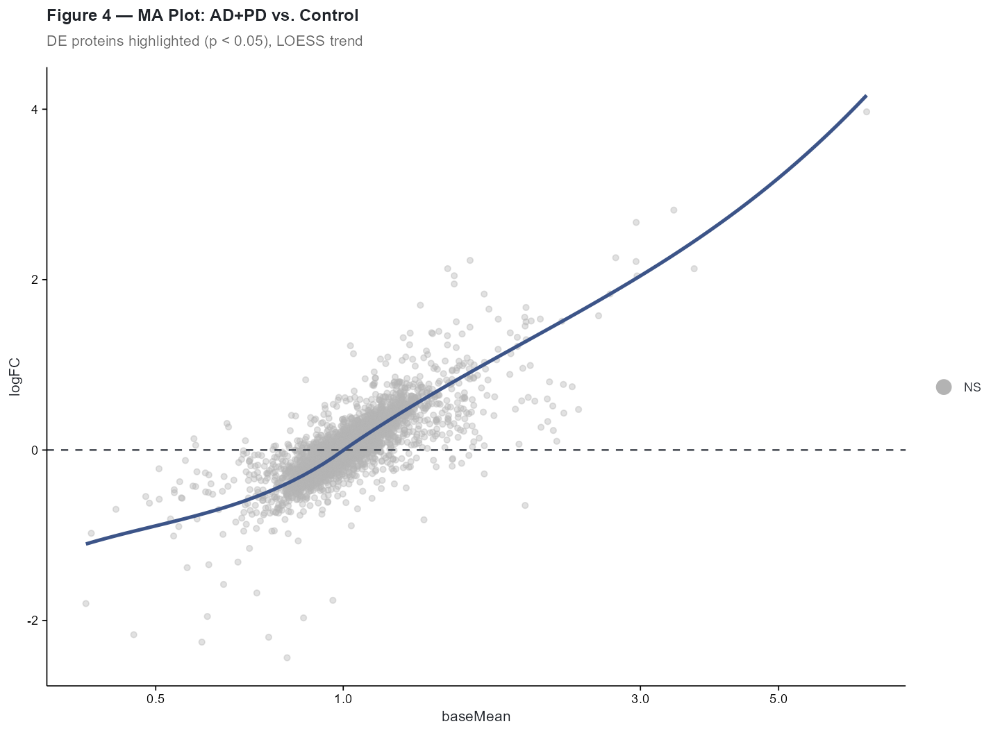
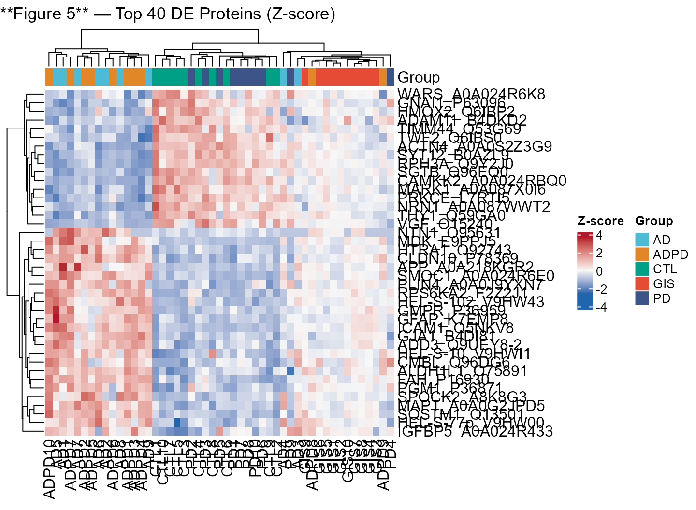
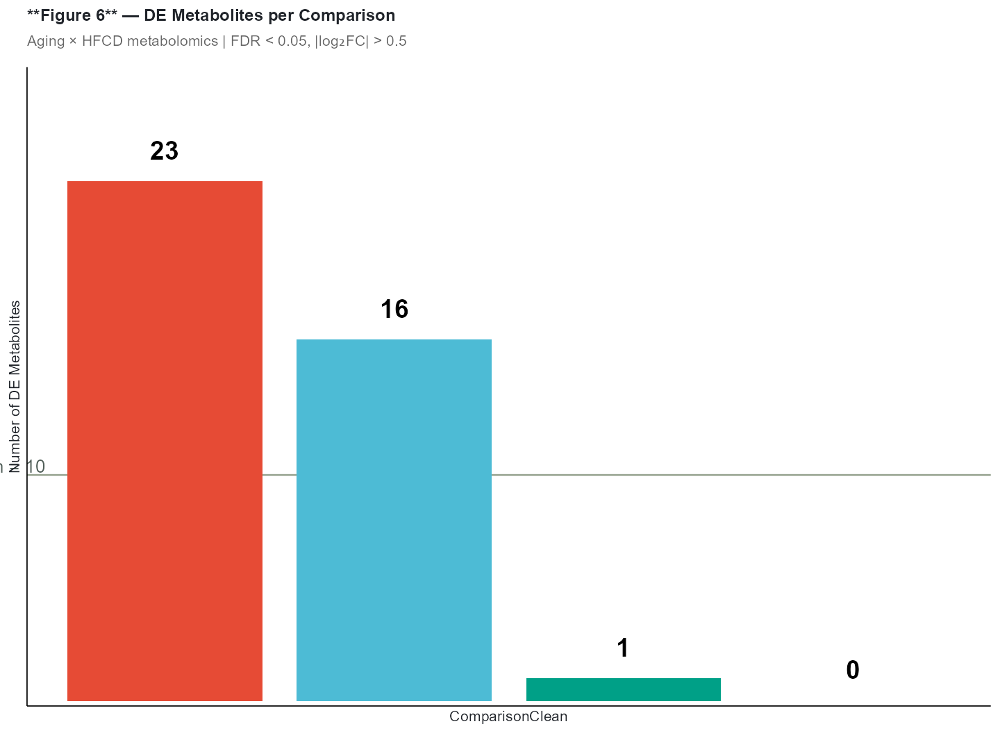
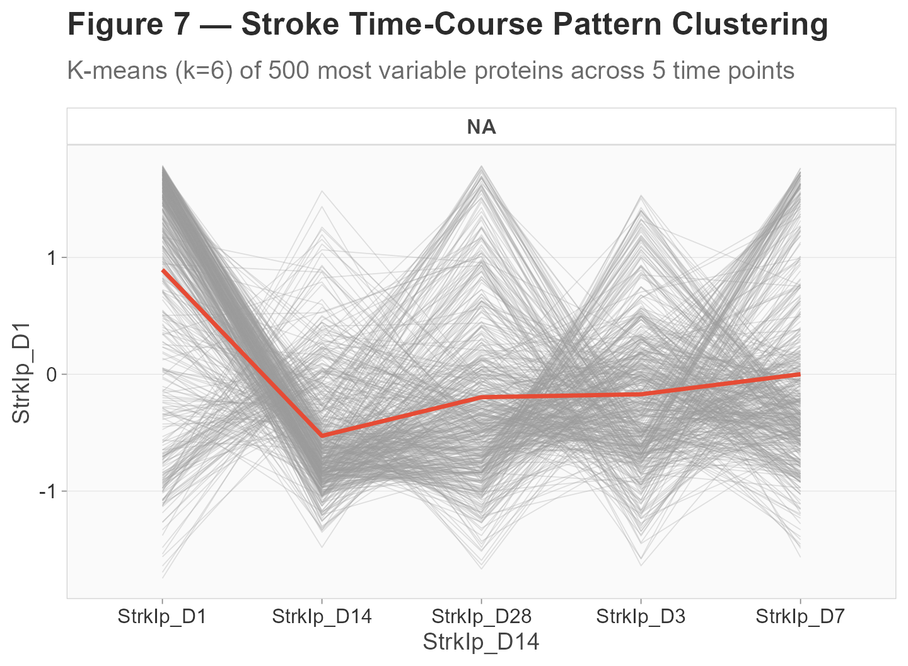
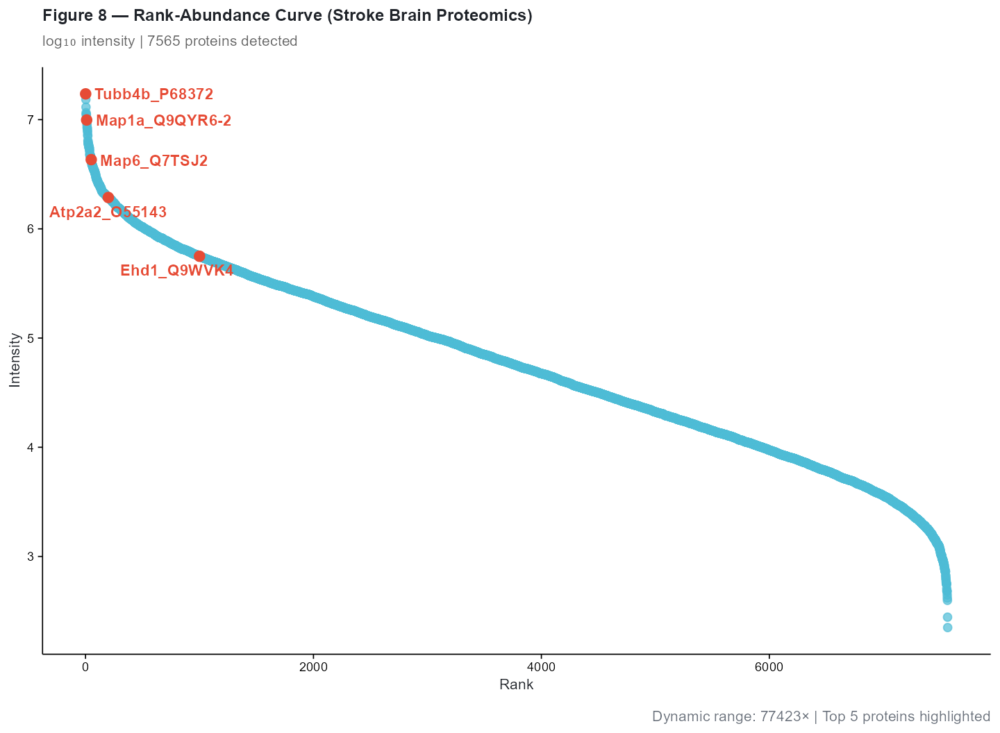
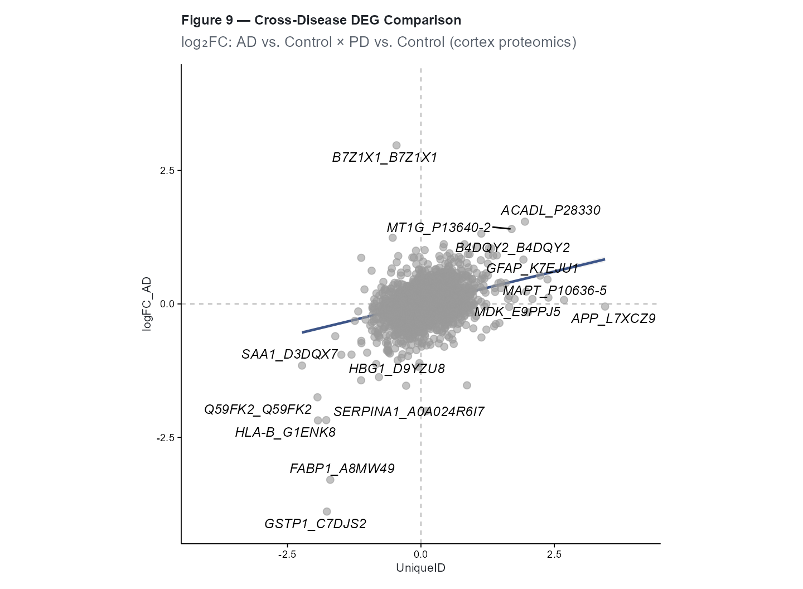
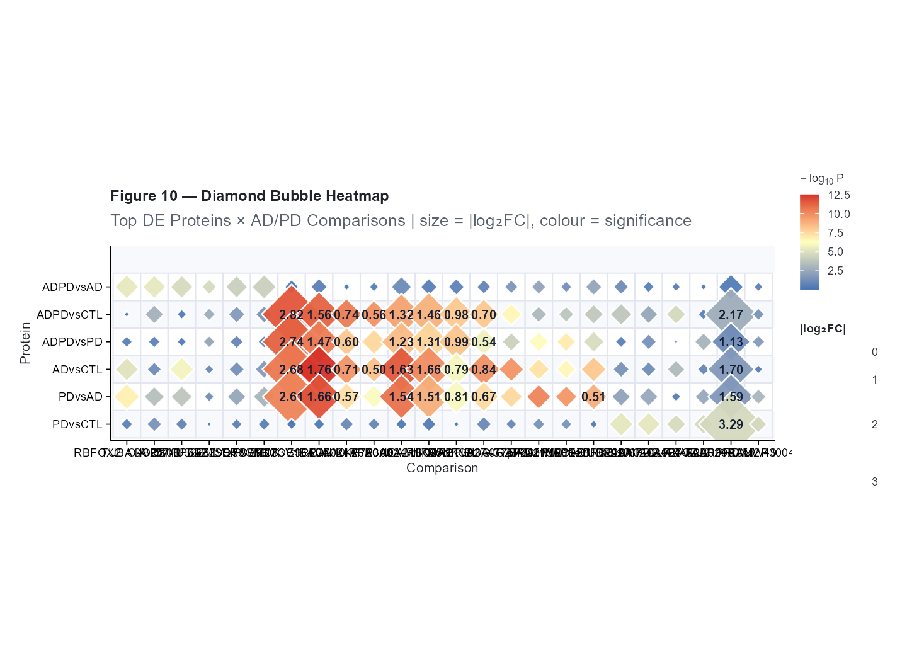

Multi-Omics Exploratory Analysis with cliomicplot
Lucas VHH Tran
2026-07-27
Source:vignettes/multiomics.Rmd
multiomics.RmdOverview
This vignette demonstrates a multi-omics exploratory analysis workflow using cliomicplot with real datasets from the xOmicsShiny platform (Biogen Inc.). We’ll generate ten publication-ready figures spanning proteomics, metabolomics, and time-course analysis:
- Figure 1 — PCA with confidence ellipses (AD/PD cortex proteomics)
- Figure 2 — Correlation matrix with clustering (AD/PD proteomics)
- Figure 3 — Volcano plot for differential expression (AD/PD proteomics)
- Figure 4 — MA plot for DE quality check (AD/PD proteomics)
- Figure 5 — Heatmap of top DE proteins
- Figure 6 — Infographic bar chart (Aging × HFCD metabolomics summary)
- Figure 7 — Expression pattern clustering (Stroke brain time-course)
- Figure 8 — Rank-abundance curve (Stroke brain proteomics)
- Figure 9 — DEG comparison scatter (two AD/PD contrasts)
- Figure 10 — Diamond bubble heatmap (marker × condition matrix)
#> cliomicplot 0.1.0 - Publication-ready clinical & omics plots
#> Main function: cliplot() | Themes: clitheme() | Params: clipar()
clipar(stat.test = NULL) # disable auto stat annotationsData: xOmicsShiny Multi-Omics Datasets
Three real datasets are bundled with cliomicplot at
inst/extdata/:
| Dataset | Type | Samples | Features | Source |
|---|---|---|---|---|
ADPD_cortex_Maxquant.RData |
Proteomics (cortex) | 42 | 8,596 | AD/PD mouse model |
StrokeBrain_TimeCourse.RData |
Proteomics (time-course) | 70 | 7,565 | Stroke model, 5 time points |
AgingHFCD_Metabolomics.RData |
Metabolomics | 46 | 393 | Aging × High-Fat Diet |
# Resolve data paths (works for both installed package and devel/devtools::load_all)
resolve_data = function(filename) {
pkg_path = system.file("extdata", filename, package = "cliomicplot")
if (pkg_path != "" && file.exists(pkg_path)) return(pkg_path)
# Fallback: look relative to the vignette source directory
fallback = file.path("..", "inst", "extdata", filename)
if (file.exists(fallback)) return(fallback)
# Fallback: direct path
fallback2 = file.path("inst", "extdata", filename)
if (file.exists(fallback2)) return(fallback2)
stop("Cannot find data file: ", filename)
}
adpd_path = resolve_data("ADPD_cortex_Maxquant.RData")
stroke_path = resolve_data("StrokeBrain_TimeCourse.RData")
aging_path = resolve_data("AgingHFCD_Metabolomics.RData")
load(adpd_path) # → data_long, data_wide, results_long, MetaData, ProteinGeneName
adpd = list(
long = data_long,
wide = data_wide,
results = results_long,
meta = MetaData,
genes = ProteinGeneName
)
load(stroke_path) # → data_long, data_wide, results_stat, MetaData, ProteinGeneName
stroke = list(
long = data_long,
wide = data_wide,
results = results_stat,
meta = MetaData,
genes = ProteinGeneName
)
load(aging_path) # → data_long, data_wide, results_long, MetaData, ProteinGeneName
aging = list(
long = data_long,
wide = data_wide,
results = results_long,
meta = MetaData,
genes = ProteinGeneName
)
cat(sprintf("AD/PD proteomics : %d proteins × %d samples\n", nrow(adpd$wide), ncol(adpd$wide)))#> AD/PD proteomics : 7163 proteins × 49 samples#> Stroke timecourse: 7565 proteins × 70 samples
cat(sprintf("Aging metabolomics: %d metabolites × %d samples\n", nrow(aging$wide), ncol(aging$wide)))#> Aging metabolomics: 393 metabolites × 590 samplesFigure 1: PCA with Confidence Ellipses
Principal component analysis of AD/PD cortex proteomics data. Groups represent Alzheimer’s disease (AD), Parkinson’s disease (PD), combined AD+PD, and controls:
# Build group labels and transpose for sample-level PCA
adpd$meta$GroupLabel = adpd$meta$group
adpd$wide_clean = adpd$wide
adpd$wide_clean[is.na(adpd$wide_clean)] = 0
# For sample-level PCA: transpose to samples × proteins
adpd$samples_mat = t(adpd$wide_clean)
clitheme("nature")#> Theme set to: nature
cliplot(adpd$samples_mat,
type = type_pca(
pc_x = 1,
pc_y = 2,
center = TRUE,
scale. = TRUE,
add_ellipse = TRUE,
ellipse_level = 0.95,
point_size = 2.5
),
by = adpd$meta$GroupLabel,
palette = "npg",
stat.test = NULL,
title = "**Figure 1** — PCA of AD/PD Cortex Proteomics",
subtitle = sprintf("PC1 vs. PC2, %d samples × %d proteins, 95%% CI ellipses",
ncol(adpd$wide), nrow(adpd$wide))) +
cli_markdown()
The axis labels include variance-explained percentages automatically. AD, PD, and AD+PD groups show distinct separation from controls along PC1.
Figure 2: Correlation Matrix
Pairwise protein expression correlations across the top 50 most variable proteins, with hierarchical clustering and significance stars:
# Select top 50 most variable proteins
variances = apply(adpd$wide_clean, 1, var, na.rm = TRUE)
top50 = names(sort(variances, decreasing = TRUE)[1:50])
cor_mat = t(adpd$wide_clean[top50, ])
clitheme("cli_minimal")#> Theme set to: cli_minimal
cliplot(as.data.frame(cor_mat),
type = type_correlation(
method = "pearson",
type = "lower",
add_coef = FALSE,
cluster = TRUE,
sig_level = 0.001
),
stat.test = NULL,
title = "**Figure 2** — Protein Correlation Matrix (Top 50 Variable)",
subtitle = "Pearson | Lower triangle | *** p < 0.001") +
cli_markdown()
Clustered correlation reveals co-expression modules — groups of proteins with coordinated abundance patterns across disease states.
Figure 3: Volcano Plot — Differential Expression
Volcano plot of AD+PD vs. Control comparison from the AD/PD
proteomics dataset. We extract the ADPDvsCTL test from the
results table:
# Filter to one comparison and prepare volcano data
adpd_de = subset(adpd$results, test == "ADPDvsCTL")
rownames(adpd_de) = adpd_de$UniqueID#> Warning: Setting row names on a tibble is deprecated.
# Log-transform P-values
adpd_de$negLogP = -log10(adpd_de$P.Value)
n_tested = nrow(adpd_de)
n_de = sum(abs(adpd_de$logFC) > 0.5 & adpd_de$P.Value < 0.05, na.rm = TRUE)
clitheme("cell")#> Theme set to: cell
cliplot(negLogP ~ logFC, data = adpd_de,
type = type_volcano(
pval_cutoff = 0.05,
fc_cutoff = 0.5,
label_genes = "significant",
max_overlaps = 20,
point_alpha = 0.5
),
title = "**Figure 3** — Volcano Plot: AD+PD vs. Control",
subtitle = "AD/PD Cortex Proteomics | p < 0.05, |log<sub>2</sub>FC| > 0.5",
caption = sprintf("%d proteins tested; %d significant",
nrow(adpd_de),
sum(abs(adpd_de$logFC) > 0.5 & adpd_de$P.Value < 0.05, na.rm = TRUE))) +
cli_markdown()
Figure 4: MA Plot — DE Quality Check
The MA plot shows the relationship between fold-change and mean expression, with DE proteins highlighted:
# Compute mean expression from data_long for each protein
adpd_means = aggregate(expr ~ UniqueID, data = adpd$long, FUN = mean, na.rm = TRUE)
names(adpd_means)[2] = "baseMean"
# Merge with DE results
adpd_ma = merge(adpd_de, adpd_means, by = "UniqueID", all.x = TRUE)
adpd_ma = adpd_ma[!is.na(adpd_ma$baseMean), ]
clitheme("science")#> Theme set to: science
cliplot(logFC ~ baseMean, data = adpd_ma,
type = type_ma(
pval_cutoff = 0.05,
add_loess = TRUE,
loess_color = "#3C5488",
sig_color = "#E64B35",
ns_color = "grey70",
point_size = 1.2,
point_alpha = 0.4
),
title = "**Figure 4** — MA Plot: AD+PD vs. Control",
subtitle = "DE proteins highlighted (p < 0.05), LOESS trend") +
cli_markdown()#> `geom_smooth()` using formula = 'y ~ x'
The LOESS trend line is approximately flat around y = 0, indicating no systematic intensity-dependent bias — good data quality.
Figure 5: Heatmap — Top DE Proteins
Clustered heatmap of the top 40 differentially expressed proteins:
# Get top 40 DE proteins by significance
adpd_de_sorted = adpd_de[order(adpd_de$P.Value), ]
top40_ids = head(adpd_de_sorted$UniqueID, 40)
# Build heatmap matrix
hm_mat = as.matrix(adpd$wide_clean[top40_ids, ])
hm_mat = t(scale(t(hm_mat)))
hm_mat[is.nan(hm_mat) | is.infinite(hm_mat)] = 0
# Column annotations
ann_col = data.frame(
Group = adpd$meta$GroupLabel,
row.names = adpd$meta$sampleid
)
# Build named color vector for annotation
grp_levels = unique(ann_col$Group)
grp_colors = c("#E64B35","#4DBBD5","#00A087","#3C5488","#E18727")[1:length(grp_levels)]
names(grp_colors) = grp_levels
ann_colors = list(Group = grp_colors)
cliplot(hm_mat,
type = type_heatmap(
scale = "none",
cluster_rows = TRUE,
cluster_cols = TRUE,
annotation_col = ann_col,
annotation_colors = ann_colors,
color_low = "#2166AC",
color_mid = "#F7F7F7",
color_high = "#B2182B",
fontsize = 9
)) +
ggplot2::labs(title = "**Figure 5** — Top 40 DE Proteins (Z-score)")
Note: The heatmap uses
ComplexHeatmap. Install withBiocManager::install("ComplexHeatmap").
Figure 6: Infographic Bar — Metabolomics Summary
Summary of differential metabolites across the Aging × HFCD comparisons:
# Count DE metabolites per comparison
aging_de = aging$results
aging_de$is_sig = aging_de$Adj.P.Value < 0.05 & abs(aging_de$logFC) > 0.5
de_counts = aggregate(is_sig ~ test, data = aging_de, FUN = sum)
names(de_counts) = c("Comparison", "n_DE")
# Infobar-style presentation
de_counts$ComparisonClean = c(
"Old CD vs\nYoung CD",
"Old HF vs\nOld CD",
"Old HF vs\nYoung HF",
"Young HF vs\nYoung CD"
)
de_counts = de_counts[order(-de_counts$n_DE), ]
de_counts$bar_color = c("#E64B35", "#4DBBD5", "#00A087", "#3C5488")
cliplot(n_DE ~ ComparisonClean, data = de_counts,
type = type_infobar(
bar_colors = setNames(de_counts$bar_color, de_counts$ComparisonClean),
reference_line = mean(de_counts$n_DE),
reference_label = sprintf("Mean = %.0f", mean(de_counts$n_DE))
),
title = "**Figure 6** — DE Metabolites per Comparison",
subtitle = "Aging × HFCD metabolomics | FDR < 0.05, |log₂FC| > 0.5",
ylab = "Number of DE Metabolites")
Figure 7: Expression Pattern Clustering
Time-course proteomics from a mouse stroke model. We cluster protein expression trajectories across 5 time points (days 1, 3, 7, 14, 28 post-stroke):
# Build time-course wide matrix: mean expr per treatment × time point
stroke$long$time_group = paste0(stroke$long$treatment, "_D", stroke$long$conc)
# Mean expression per protein × time_group
stroke_means = aggregate(
expr ~ UniqueID + time_group,
data = stroke$long[stroke$long$treatment == "StrkIp", ], # stroke model
FUN = mean, na.rm = TRUE
)
# Reshape to wide
stroke_wide = reshape2::dcast(stroke_means, UniqueID ~ time_group, value.var = "expr")
rownames(stroke_wide) = stroke_wide$UniqueID
stroke_wide$UniqueID = NULL
# Keep top 500 most variable proteins
vars = apply(stroke_wide, 1, var, na.rm = TRUE)
stroke_wide_top = stroke_wide[names(sort(vars, decreasing = TRUE)[1:500]), ]
stroke_wide_top[is.na(stroke_wide_top)] = 0
cat(sprintf("Time-course matrix: %d proteins × %d time points\n",
nrow(stroke_wide_top), ncol(stroke_wide_top)))#> Time-course matrix: 500 proteins × 5 time points
colnames(stroke_wide_top)#> [1] "StrkIp_D1" "StrkIp_D14" "StrkIp_D28" "StrkIp_D3" "StrkIp_D7"
clitheme("broadsheet")#> Theme set to: broadsheet
cliplot(stroke_wide_top,
type = type_pattern(
k = 6,
method = "kmeans",
ncol = 3,
line_alpha = 0.3,
centroid_color = "#E64B35"
),
stat.test = NULL,
title = "**Figure 7** — Stroke Time-Course Pattern Clustering",
subtitle = "K-means (k=6) of 500 most variable proteins across 5 time points") +
cli_markdown()
Each panel shows one cluster with individual protein trajectories (grey) and the cluster centroid (red). Clusters reveal distinct response patterns: acute responders (D1 peak), late responders (D14–D28), and sustained changes.
Figure 8: Rank-Abundance Curve
Rank-abundance curve from stroke brain proteomics — a standard QC plot showing the dynamic range of protein detection:
# Aggregate mean expression per protein
stroke_expr = aggregate(expr ~ UniqueID, data = stroke$long, FUN = mean, na.rm = TRUE)
names(stroke_expr) = c("Protein", "Intensity")
# Sort by intensity descending
stroke_expr = stroke_expr[order(-stroke_expr$Intensity), ]
stroke_expr$Rank = 1:nrow(stroke_expr)
# Highlight top 5 and some known proteins
highlight_ids = stroke_expr$Protein[c(1, 10, 50, 200, 1000)]
cat(sprintf("Dynamic range: %.0f – %.0f (%.0f×)\n",
min(stroke_expr$Intensity), max(stroke_expr$Intensity),
max(stroke_expr$Intensity) / min(stroke_expr$Intensity)))#> Dynamic range: 222 – 17217332 (77423×)
clitheme("science")#> Theme set to: science
cliplot(Intensity ~ Rank, data = stroke_expr,
type = type_rankabundance(
log_scale = "10",
point_color = "#4DBBD5",
marginal_type = "density",
label_genes = highlight_ids,
label_color = "#E64B35",
label_size = 3
),
stat.test = NULL,
title = "**Figure 8** — Rank-Abundance Curve (Stroke Brain Proteomics)",
subtitle = sprintf("log₁₀ intensity | %d proteins detected", nrow(stroke_expr)),
caption = sprintf("Dynamic range: %.0f× | Top 5 proteins highlighted",
max(stroke_expr$Intensity)/min(stroke_expr$Intensity))) +
cli_markdown()
Figure 9: DEG Comparison Scatter
Compare fold-changes between two AD/PD contrasts: AD vs. Control and PD vs. Control. This reveals proteins that are consistently or differentially regulated across the two related diseases:
# Extract two comparisons and build standard-format data frames
ad_vs_ctl = subset(adpd$results, test == "ADvsCTL")[, c("UniqueID", "logFC", "P.Value")]
pd_vs_ctl = subset(adpd$results, test == "PDvsCTL")[, c("UniqueID", "logFC", "P.Value")]
# Rename to standard column names expected by type_deg_compare
deg1 = ad_vs_ctl # Column "logFC" will be used as comp1 logFC
deg2 = pd_vs_ctl # Column "logFC" will be used as comp2 logFC
# Merge on UniqueID
deg_merged = merge(deg1, deg2, by = "UniqueID", suffixes = c("_AD", "_PD"))
# After merge: logFC_AD = comp1 logFC, logFC_PD = comp2 logFC
# For type_deg_compare, rename comp2's logFC column
deg2_clean = deg2
names(deg2_clean)[names(deg2_clean) == "logFC"] = "logFC_comp2"
# Label top concordant hits
deg_merged$effect = abs(deg_merged$logFC_AD) + abs(deg_merged$logFC_PD)
top_labels = head(deg_merged[order(-deg_merged$effect), ], 15)$UniqueID
cat(sprintf("Merged proteins: %d\n", nrow(deg_merged)))#> Merged proteins: 7163
cat(sprintf("Concordant direction: %.1f%%\n",
100 * sum(sign(deg_merged$logFC_AD) == sign(deg_merged$logFC_PD), na.rm = TRUE) / nrow(deg_merged)))#> Concordant direction: 58.7%
clitheme("cell")#> Theme set to: cell
cliplot(logFC_AD ~ UniqueID, data = deg_merged,
type = type_deg_compare(
comp2_data = deg2_clean,
merge_by = "UniqueID",
add_lm = TRUE,
label_genes = top_labels,
same_scale = TRUE
),
stat.test = NULL,
title = "**Figure 9** — Cross-Disease DEG Comparison",
subtitle = "log₂FC: AD vs. Control × PD vs. Control (cortex proteomics)") +
cli_markdown()#> `geom_smooth()` using formula = 'y ~ x'
The strong positive correlation indicates that AD and PD share many dysregulated proteins in the cortex, with disease-specific outliers visible in the off-diagonal quadrants.
Figure 10: Diamond Bubble Heatmap
A pathway-inspired bubble heatmap showing the top DE proteins across all six AD/PD comparisons:
# Select top DE proteins from each comparison
top_per_test = lapply(unique(adpd$results$test), function(tst) {
sub = subset(adpd$results, test == tst)
sub = sub[order(sub$P.Value), ]
head(sub$UniqueID, 6)
})
top_all = unique(unlist(top_per_test))
# Build bubble heatmap data
bh_rows = expand.grid(
Protein = top_all,
Comparison = unique(adpd$results$test),
stringsAsFactors = FALSE
)
bh_rows$logFC = sapply(1:nrow(bh_rows), function(i) {
row = subset(adpd$results,
UniqueID == bh_rows$Protein[i] & test == bh_rows$Comparison[i])
if (nrow(row) > 0) row$logFC[1] else NA
})
bh_rows$PValue = sapply(1:nrow(bh_rows), function(i) {
row = subset(adpd$results,
UniqueID == bh_rows$Protein[i] & test == bh_rows$Comparison[i])
if (nrow(row) > 0) -log10(row$P.Value[1]) else NA
})
bh_rows = bh_rows[!is.na(bh_rows$logFC), ]
bh_rows$absFC = abs(bh_rows$logFC)
cliplot(Protein ~ Comparison, data = bh_rows,
by = bh_rows$absFC,
type = type_bubble_heatmap(
label_threshold = 0.5,
max_size = 14,
size_name = "|log₂FC|",
fill_name = expression(-log[10]~"P"),
fill_low = "#4575B4",
fill_mid = "#FFFFBF",
fill_high = "#D73027"
),
extra_data = list(fill = bh_rows$PValue),
stat.test = NULL,
title = "**Figure 10** — Diamond Bubble Heatmap",
subtitle = "Top DE Proteins × AD/PD Comparisons | size = |log₂FC|, colour = significance") +
cli_markdown()
Summary
In this vignette we produced ten publication-ready figures using real xOmicsShiny multi-omics datasets:
- PCA — AD/PD cortex proteomics with 95% CI ellipses
- Correlation Matrix — Co-expression modules from top variable proteins
- Volcano Plot — AD+PD vs. Control differential expression
- MA Plot — DE quality assessment with LOESS trend
- Heatmap — Top 40 DE proteins with group annotations
- Infobar — DE metabolite counts across Aging × HFCD comparisons
- Pattern Clustering — Stroke time-course trajectory clustering
- Rank-Abundance Curve — Stroke proteome dynamic range QC
- DEG Comparison — Cross-disease concordance (AD × PD)
- Diamond Bubble Heatmap — Protein × Comparison significance matrix
All three datasets (ADPD_cortex_Maxquant,
StrokeBrain_TimeCourse,
AgingHFCD_Metabolomics) are included at
system.file("extdata", ...).
Reset global settings:
clitheme()